ИСТОРИЯ ЕВРОПЫ
с древнейших времен до наших дней
Том первый. Древняя Европа
Иллюстрации к главам 5-9 II части
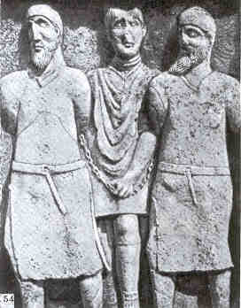
Рис. 54.
Пленные даки в сопровождении римского
легионера.
Метопа из Трофея Траяна. II в. Бухарест.
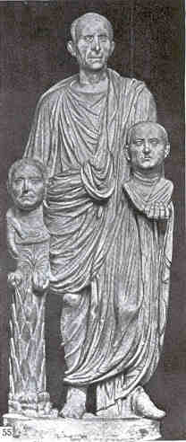
Рис. 55.
Римлянин с портретами предков. Время Августа.
Рим
Палаццо Берберини.
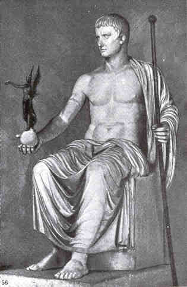
Рис. 56.
Статуя Августа из Кум.
I в. до н.э. - I в. н.э.
Ленинград. Гос. Эрмитаж.
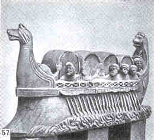
Рис. 57.
Римское речное судно с транспортом вина. Музей Трира.
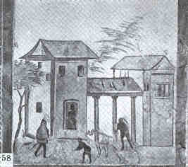
Рис. 58.
Римская вилла. Фреска. Музей Трира.
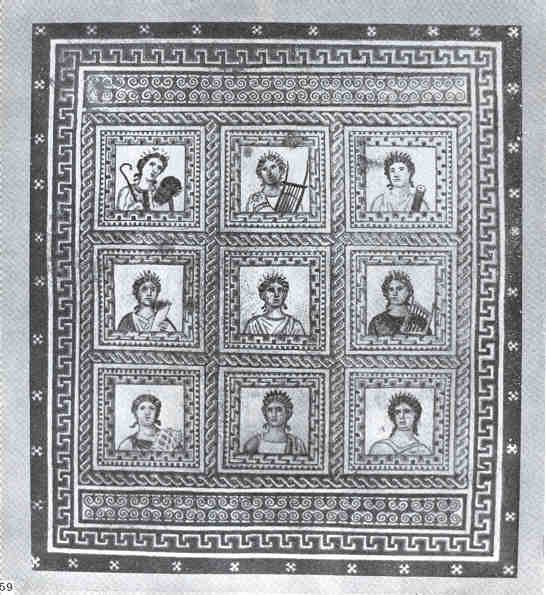
Рис. 59.
Музы. Мозаика. Музей Трира.
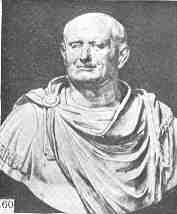
Рис. 60.
Бюст Веспасиана. I в. Флоренция. Галерея Уффици.
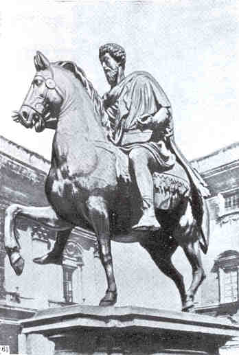
Рис. 61.
Конная статуя марка Аврелия. II в. Рим.
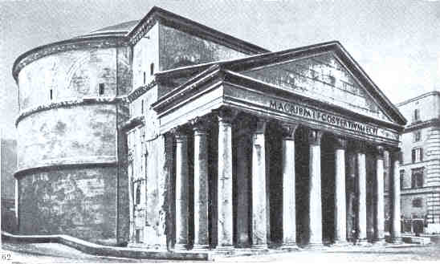
Рис. 62.
Пантеон. II в. Рим.
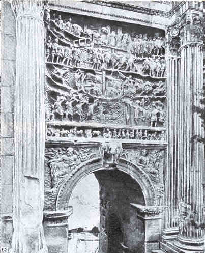
Рис. 63.
Арка Септимия Севера. IIIв. Рим.
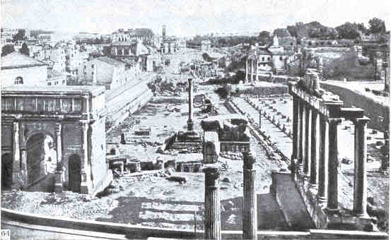
Рис. 64.
Римский форум.
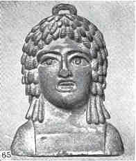
Рис. 65.
Римская гиря. Паннония.
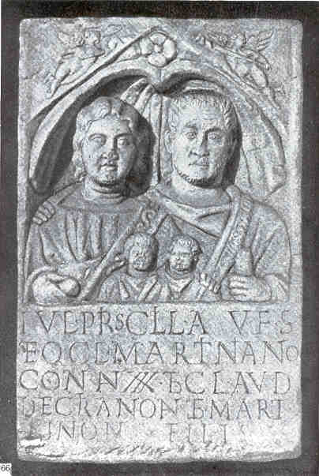
Рис. 66.
Римское семейное надгробие. Паннония.
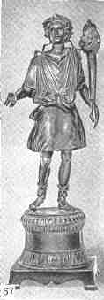
Рис. 67.
Бронзовая статуэтка Лара. Паннония.
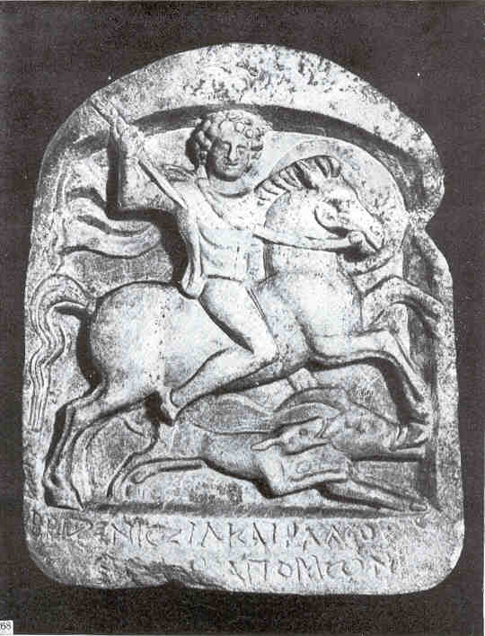
Рис. 68.
Фракийский всадник. Вотивный рельеф. II -III вв.
Пловдив.
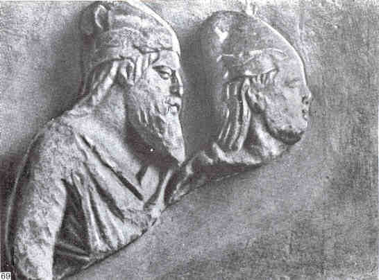
Рис. 69.
Рельеф с изображением Скилура и Палакс. II - I вв.
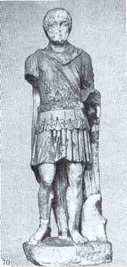
Рис. 70.
Статуя римского военачачальика Тира. Первые века н.э.
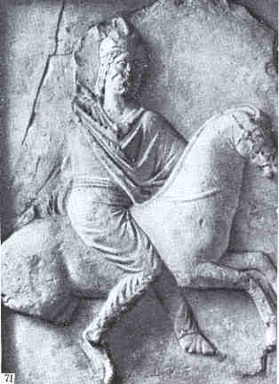
Рис. 71.
Рельеф с изображением царя Палака. Неаполь скифский.
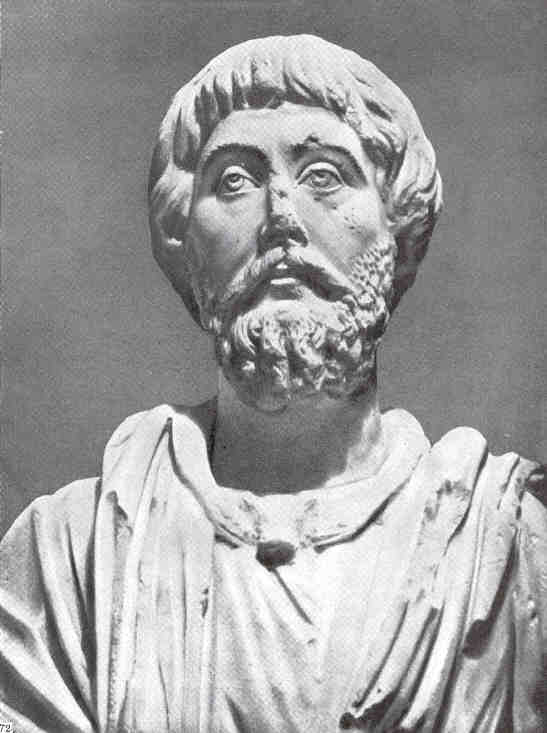
Рис. 72.
Статуя Пеокла. наместника боспорского царя в Горгиппии
(Анапа).
II в. до н.э. Москва, ГМИИ.
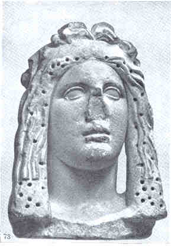
Рис. 73.
Портрет Боспорского царя I в. до н.э. Ленинград. Гос.
Эрмитаж.
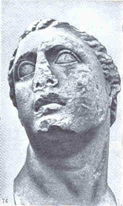
Рис. 74.
Митридат VI Евпатор. Ленинград. Гос. Эрмитаж.
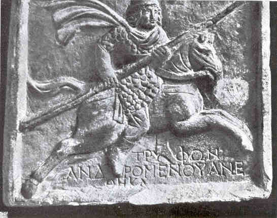
Рис. 75.
Рельеф Трифона из Томаиса. II в. до н.э. Ленинград, Гос.
Эрмитаж.
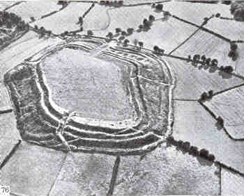
Рис. 76.
Укрепление III в. до н.э. Чисбери Рингз. Англия.
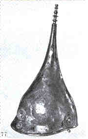
Рис. 77.
Кельтский шлем из погребения в Ла Горж Мейе.
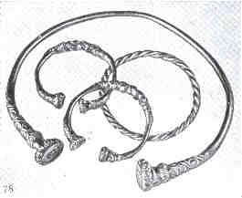
Рис. 78.
Украшения из гробницы Вальдальгельсхейма.
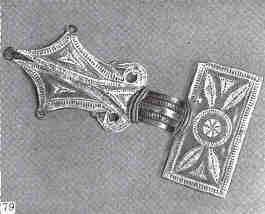
Рис. 79.
Серебряная германская фибула. Дания.
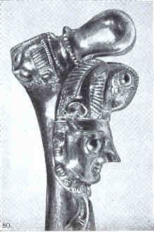
Рис. 80.
Деталь торквеса из погребения в Рейнхейме. Начало
Латенского времени.
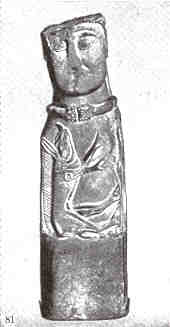
Рис. 81.
Скульптура из Эуфигнетке. I в. до н.э.
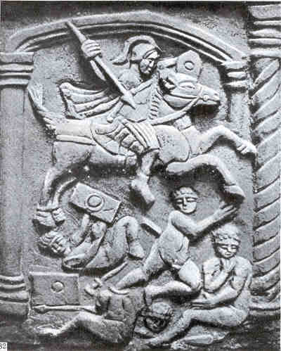
Рис. 82.
Побежденные бритты. Рельеф с вала Антонина Пия в
Шотландии. IIв.
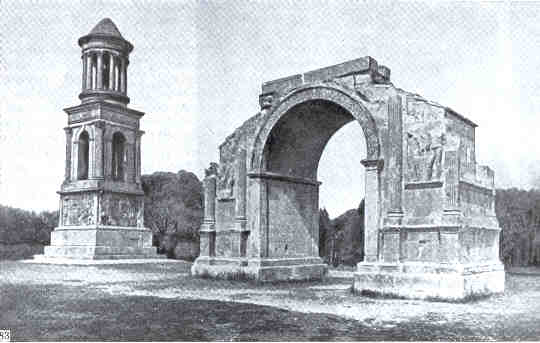
Рис. 83.
Мавзолей Юлиев и арка в Глануме (Галия).
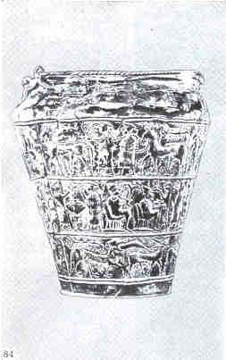
Рис. 84.
Бронзовая ситула из Вача V в. Народный музей Любляны.
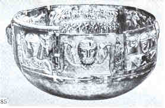
Рис. 85.
Бронзовый котел с ритуальными сценами IV в. до н.э. из
Гундеструпа. Общий вид. Дания.
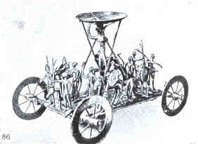
Рис. 86.
Культовая повозка VI в. до н.э. из Штреппвега
(Австрия).
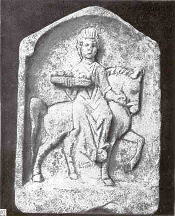
Рис. 87.
Кельтская богиня Эпона. Рельеф римского времени. Музей
Трира.
|